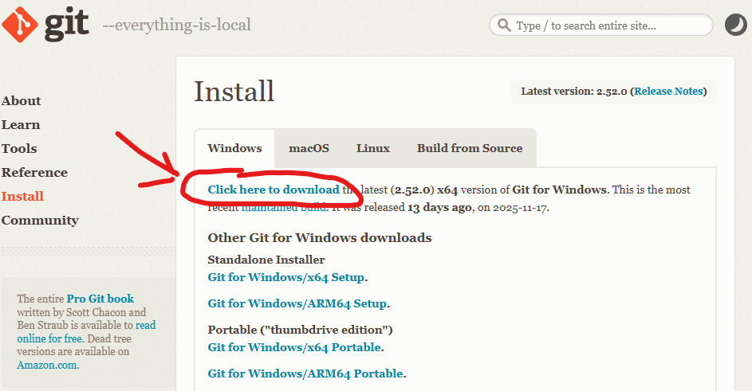
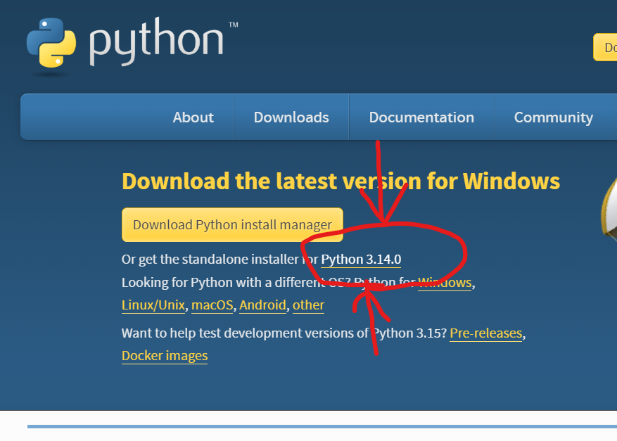
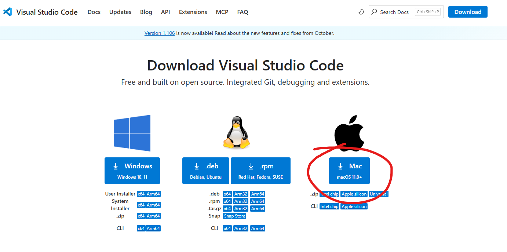
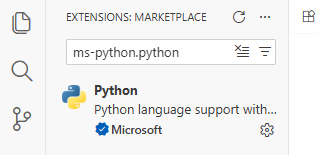
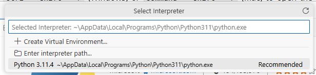
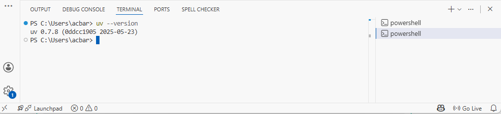
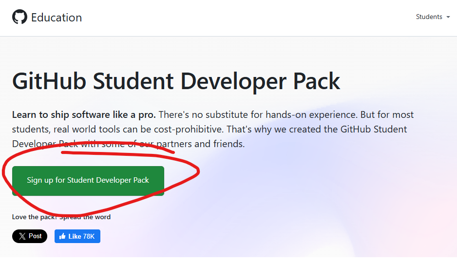

Local Python Development Setup Guide¶
This guide will walk you through setting up your computer for Python development using Visual Studio Code (VS Code). By the end of this guide, you will have a fully functional development environment with Git, Python, VS Code, and all the tools you need to write, test, and share your code.
Step 1: Install Git¶
What is Git? Git is a version control system that tracks changes to your code over time. It lets you save snapshots of your work, go back to previous versions if something breaks, and collaborate with others. Almost all professional developers use Git.
Why do you need Git? You’ll use Git to download code from GitHub (a website that hosts code), save your own code changes, and submit your work.
Go to the Git download page: https://git-scm.com/downloads/win
Click the “Click here to download” link to download the installer (it will download a file like
Git-2.xx.x-64-bit.exe)Run the downloaded installer by double-clicking on it
Important: During installation, you will see many screens with options. For most screens, you can just click Next to accept the default settings.
Click Install and wait for the installation to complete
Click Finish when done
There are two ways to install Git on Mac. We recommend installing Homebrew since that will also help you install other tools in the future. If you have trouble with Homebrew, you can use the Xcode Command Line Tools method.
Option A: Install via Homebrew
You probably do not have Homebrew installed yet, so first we need to install Homebrew using the Terminal:
Open Terminal
Copy and paste the line of code below into Terminal and press Enter to install Homebrew
/bin/bash -c "$(curl -fsSL https://raw.githubusercontent.com/Homebrew/install/HEAD/install.sh)"
When it asks for password, type yours in. It’ll output a lot of text, and then beneath a large list of tags, you see a purple arrow with “Next Steps”.
To confirm that Homebrew is installed correctly, type the following command in Terminal and press Enter:
brew help
Some help text should appear. If it does, Homebrew is installed correctly! Next you need to install Git using Homebrew. Type the following command in Terminal and press Enter:
brew install git
Option B: Install via Xcode Command Line Tools
Open the Terminal application:
Press
Command + Spaceto open Spotlight SearchType
Terminaland press Enter
In Terminal, type the following command and press Enter:
xcode-select --installA popup will appear asking you to install the command line developer tools. Click Install
Wait for the installation to complete (this may take several minutes)
Step 2: Install Python¶
What is Python? Python is a programming language - it’s the language you’ll use to write your code. Python is also the name of the program on your computer that runs Python code.
Why do you need Python? You need Python installed on your computer to run Python programs. While VS Code is where you’ll write your code, Python is what actually executes it. If you used Thonny previously, Python was included with it, but for VS Code, you need to install Python separately.
Go to the Python download page: https://www.python.org/downloads/
Click the link underneath the large yellow button (do not click the button) to download the “Stand-alone installer”. You can get the latest Python version.
Run the downloaded installer by double-clicking on it
IMPORTANT: On the first screen of the installer, make sure to check the box that says “Add Python to PATH” at the bottom of the window. This is crucial!

Click “Install Now”
Wait for the installation to complete, then click Close
Go to the Python download page: https://www.python.org/downloads/
Click the large yellow “Download Python 3.x.x” button
Open the downloaded
.pkgfile and follow the installation instructionsClick Continue through the screens, then Install
Enter your Mac password when prompted, and wait for installation to complete
Step 3: Install Visual Studio Code (VS Code)¶
What is VS Code? Visual Studio Code (VS Code) is a code editor - it’s like a word processor, but designed specifically for writing code. It has features like syntax highlighting (coloring your code to make it easier to read), error detection, and extensions that add extra functionality.
Why do you need VS Code? While you could write Python code in any text editor (even Notepad), VS Code makes coding much easier with features like auto-completion, error highlighting, and integrated terminal access.
Go to the VS Code download page: https://code.visualstudio.com/Download
Click the Windows download button (it will download a file like
VSCodeUserSetup-x64-1.xx.x.exe)
Run the downloaded installer
Accept the license agreement and click Next
On the “Select Additional Tasks” screen, we recommend checking these boxes if they are available:
“Add ‘Open with Code’ action to Windows Explorer file context menu” - lets you right-click on files to open them in VS Code
“Add ‘Open with Code’ action to Windows Explorer directory context menu” - lets you right-click on folders to open them in VS Code
“Add to PATH” - lets you open VS Code from the command line
Click Next, then Install
When installation completes, you can check “Launch Visual Studio Code” and click Finish
Go to the VS Code download page: https://code.visualstudio.com/Download
Click the Mac download button (it will download a
.zipfile)Open the downloaded
.zipfile (usually in your Downloads folder). This will extract the VS Code applicationDrag the Visual Studio Code.app to your Applications folder
Open VS Code by going to your Applications folder and double-clicking on Visual Studio Code
If you see a warning that says “Visual Studio Code is an app downloaded from the Internet. Are you sure you want to open it?”, click Open
The VS Code Welcome Screen will look something like this:

Step 4: Install the Python Extension for VS Code¶
What is the Python Extension? The Python extension adds Python-specific features to VS Code, like intelligent code completion, debugging, and the ability to run Python code directly from the editor.
Why do you need it? Without this extension, VS Code is just a text editor. With the extension, VS Code understands Python and can help you write better code faster.
Open VS Code
Click on the Extensions icon in the left sidebar (it looks like four squares, with one square separated from the others)

In the search box at the top, type
ms-python.pythonFind the extension called “Python” by Microsoft (it should be the first result with millions of downloads)
Click the extension, and then click the Install button
Wait for the installation to complete. You should see the button change to “Installed” or show a gear icon
Verify the installation:
Press
Ctrl + Shift + P(Windows) orCommand + Shift + P(Mac) to open the Command PaletteType
Python: Select Interpreterand press EnterYou should see your installed Python version in the list. Select it.

Step 5: Install UV¶
What is UV? UV is a fast Python package manager. It helps you install Python libraries (pre-written code that you can use in your projects) and manage project dependencies (libraries that your project needs to work).
Why do you need UV? When you download a Python project, it often requires additional libraries to run. UV makes it easy to install all these libraries with a single command.
To install UV, we’ll need to use the Terminal integrated into VS Code. Click the
Viewmenu at the top and then clickTerminal:

This will likely open the PowerShell Terminal by default on Windows. You can verify this by looking at the dropdown in the top-right of the Terminal window. If the dropdown shows “PowerShell”, you’re good to go. If it shows something else (like Command Prompt), click the dropdown arrow and select PowerShell from the list.

Copy and paste this command into PowerShell, then press Enter:
powershell -ExecutionPolicy ByPass -c "irm https://astral.sh/uv/install.ps1 | iex"
Wait for the installation to complete
In order for the changes to take effect, restart VS Code.
In the new PowerShell window, type
uv --versionand press EnterYou should see a version number like
uv 0.x.x- this means UV is installed correctly!
To install UV, we’ll need to use the Terminal integrated into VS Code. Click the
Viewmenu at the top and then clickTerminal:
Copy and paste this command, then press Enter:
curl -LsSf https://astral.sh/uv/install.sh | sh
Wait for the installation to complete
In order for the changes to take effect, create a new Terminal tab by clicking the plus (+) icon in the terminal window.
Verify the installation:
In the new Terminal window, type
uv --versionand press EnterYou should see a version number like
uv 0.x.x- this means UV is installed correctly!
Step 6: Apply for GitHub Student Developer Pack¶
What is the GitHub Student Developer Pack? The GitHub Student Developer Pack is a collection of free tools and services for students. It includes free access to GitHub Copilot, cloud credits, domain names, and many other developer tools.
Why should you apply? As a student, you get access to professional tools that would normally cost money. GitHub Copilot alone (which you will set up in Step 7) normally costs $10/month, but it’s free for students!
How to Apply:
Click the “Sign up for Student Developer Pack” button
Log in to your GitHub account if you haven’t already
Select “Student” when asked about your academic status
Choose your school from the list (or type to search for it)
Verify your student status - you’ll need to provide proof that you’re a student. Options include:
Using your school email address (often ends in
.edu)Uploading a photo of your student ID
Uploading other academic documents
Submit your application
Verification can sometimes take a few minutes to a few days, depending on the verification method. If you used your school email, it may be instant. If it takes longer, then continue onto step 8 and return here later.
Once approved, you’ll receive an email confirming your access to the Student Developer Pack
Note
If you’re having trouble getting verified, try:
Using your official school email address
Making sure your student ID photo is clear and shows your name, the current date/semester, and your school’s name
Waiting a few days and trying again if the automatic verification fails
Step 7: Setup GitHub Copilot¶
What is GitHub Copilot? GitHub Copilot is an AI-powered coding assistant that suggests code as you type. It can help you write code faster by suggesting completions, entire functions, and even helping you understand unfamiliar code.
Why should you use it? As a student, you have free access to GitHub Copilot. It’s like having a helpful coding partner that can suggest solutions and help you learn new programming patterns. However, you must think very critically about the suggestions it makes, as they may not always be correct or optimal. Also, as you learn to code, it’s important to understand the code you write rather than relying too heavily on AI suggestions. Over-relying on AI tools can hinder your learning process.
Prerequisites:
You need a GitHub account.
You need to have the GitHub Student Developer Pack (from Step 6) to access Copilot for free.
Installing the GitHub Copilot Extension:
Open VS Code
Click on the Extensions icon in the left sidebar
In the search box, type
GitHub.copilotFind and install “GitHub Copilot” by GitHub (look for the official one with millions of downloads)
Click Install
After installation, you’ll see a prompt to sign in to GitHub. Click Sign in to GitHub
Your browser will open. Log in to your GitHub account if prompted, and authorize VS Code to access your account
Return to VS Code. You should see that Copilot is now active.
How to use Copilot:
Once Copilot is activated, it will automatically suggest code as you type. When you see a gray suggestion appear:
Press
Tabto accept the suggestionPress
Escto dismiss itKeep typing to ignore it and write your own code
You can also:
Press
Ctrl + Enter(Windows) orCommand + Enter(Mac) to see multiple suggestionsType a comment describing what you want, and Copilot will suggest code to match
Note
Copilot suggestions are helpful, but always review them before accepting. The suggestions are not always correct, and understanding what the code does is important for your learning. You may want to disable Copilot temporarily if you find yourself relying on it too much.
Step 8: Fork and Clone a Repository¶
What is GitHub?
GitHub is a website that hosts code repositories. It uses Git for version control and makes it easy to share code with others, collaborate on projects, and track changes over time. Since you installed Git in Step 1, you can now use Git to interact with repositories on GitHub.
What is Forking? Forking creates your own copy of someone else’s project on GitHub. This copy belongs to you, so you can make changes without affecting the original project (referred to as the “Upstream”, as opposed to your “Fork”). Think of it like making a copy of a Google Doc to your own Google Drive so you can edit it.
What is Cloning? Cloning downloads a copy of a GitHub repository to your computer so you can work on it locally. Think of it like downloading a Google Doc to your computer to edit it offline.
Why do you need to do this? When working on assignments or collaborative projects, you’ll often start with code that someone else has written. Forking gives you your own copy to work on, and cloning puts that copy on your computer. Later on, we’ll learn how to push your changes back to GitHub.

Step 8a: Fork the Repository
Use the URL provided by your instructor to create a new repository on Github. Make sure you use the instructor provided URL for your classroom!
Note
You must use the link from the assignment on Canvas. Do NOT use the URL from your final project. This is a different repository!
Wait for GitHub to create your fork. You’ll be taken to your forked repository (notice the URL now shows your username).
Step 8b: Clone the Repository to Your Computer
On your forked repository page, click the green Code button
Make sure HTTPS is selected (not SSH), and click the copy icon to copy the URL
Return to VS Code.
Press
Ctrl + Shift + P(Windows) orCommand + Shift + P(Mac) to open the Command PaletteType
Git: Cloneand select it

Type
Ctrl+V(Windows) orCmd+V(Mac) to paste the previously copied link and press enter.If you are asked to authenticate on GitHub, do so.
A folder select window will prompt you to “Choose a folder to clone into.” We recommend that you create a “Projects” folder in your home directory to keep all your coding projects organized, and then also create folders for each course inside of that. Select that folder (or any folder you prefer) and click Select Folder.
Danger
Do not store your projects in system folders like “Program Files” or “Applications”. These folders may have restricted permissions that can interfere with Git operations. Also avoid using folders like “Downloads” since they can get cluttered and make it hard to find your projects later.
Click Select as Repository Destination
VS Code will download the repository. When it asks “Would you like to open the cloned repository?”, click Open
If prompted to trust the authors of the files in the repository, click Yes, I trust the authors
You now have the project on your computer and open in VS Code!
Step 9: Install Dependencies and Run Tests¶
What are Dependencies? Dependencies are external libraries that a project needs to work. Most Python projects use libraries written by other developers to avoid reinventing the wheel. Drafter is an example of such a library.
What are Tests? Tests are code that checks if other code works correctly. Running tests tells you if the project is set up correctly and if your changes break anything.
There are many different libraries for testing in Python. Drafter works particularly well with the Bakery testing framework, which is meant for novices.
Why do you need to do this? Before making changes to a project, you should install its dependencies so the code can run, and run the tests to make sure everything is working. This gives you a baseline to compare against after you make changes.
Step 9a: Open the Terminal in VS Code
In VS Code, open the integrated terminal if it is not already open:
Press
Ctrl + `(backtick, the key below Escape) on WindowsOr press
Command + `on MacOr go to View → Terminal in the menu
Step 9b: Install Dependencies
In the terminal, type the following command and press Enter:
uv syncThis command reads the project’s dependency file and installs all required libraries.
Wait for UV to download and install all dependencies. You’ll see progress messages in the terminal. You will probably see a lot of output as it installs packages, this is normal.
If you see a message in the bottom-right that says “We noticed a new environment has been created. Do you want to select it for the workspace folder?”, click “Yes”.

Step 9c: Run the Tests
In the terminal, type the following command and press Enter:
uv run tests.py
This runs all the tests in the project.
Look at the output. You should see something like:
FAILURE - [line 11] assert_equal(index(State()), Page(State(), ["Hello ___!"])), predicted answer was Page(state=State(), content=['Hello ___!']), computed answer was Page(state=State(), content=['Hello World!']).
If you see failing tests, don’t worry! This is expected - your task is to fix them in the next step.
Step 10: Fix the Issue and Confirm It Works¶
Now that you’ve set up the project and identified failing tests, it’s time to fix the issue.
Step 10a: Understand the Problem
Look at the test output to see the details on the failing test.
The failing tests usually give you a clue about what’s wrong. Look for:
The line number where the failure occurred
The expected value vs. the actual value
Open the
tests.pyfile in VS Code to see the test code. You can find it in the file explorer on the left side.

Previously, we usually put our tests in the same file as our code, but now they are separated. This is a common practice in professional development. That way, we can run our tests (tests.py) independently of our main code (main.py). Notice we have a special line of code to prevent the server from starting when we run tests.
We’ll break up a lot of our code into multiple files in the future, like separating out our data models into state.py. For now, let’s focus on fixing the test.
Step 10b: Make Your Fix
The failing test is in the
tests.pyfile. However, the actual issue is in the main code file that gets imported bytests.py. Notice the lines above the tests where we import the code to be tested:from main import *. This means the code to fix is inmain.py.Open the
main.pyfile in VS Code. Notice that the test failure mentioned something about “Hello ___!” vs. “Hello World!”. Look for the part of the code that generates this output, and fix the returned value to match the test.Save your file (
Ctrl + Son Windows,Command + Son Mac)
Step 10c: Run the Tests Again
In the terminal, run the tests again:
uv run tests.py
Check if your fix worked:
If all tests pass, congratulations! Your fix worked!
If tests still fail, read the error messages, adjust your code, and try again
Step 11: Add, Commit, and Push Your Changes¶
What is Add, Commit, and Push?
Add (Stage): Tells Git which file changes you want to include in your next save point
Commit: Creates a save point (snapshot) of your changes with a message describing what you did
Push: Uploads your commits to GitHub so they’re saved online and visible to others
Why do you need to do this? This is how you save your work to GitHub. Without pushing, your changes only exist on your computer. Pushing ensures your work is backed up and can be submitted.
It may be helpful to think of this process like filling out a shopping cart:
Add is like putting items into your cart
Commit is like checking out and paying for the items in your cart
Push is like shipping the items to your home
Often times, you’ll make multiple changes before committing. You can add files multiple times before committing, and you can commit multiple times before pushing.
Recall the diagram we showed you before? This will cover most of the remaining parts of it!
Step 11a: Stage Your Changes
In VS Code, click on the Source Control icon in the left sidebar (it looks like a branching line, and may show a number indicating changed files)

You’ll see a list of files you’ve changed under “Changes”
Hover over the “Changes” header and click the + icon to stage all changes
Or, hover over individual files and click the + icon next to each file to stage specific files
Step 11b: Commit Your Changes
In the text box at the top of the Source Control panel, type a clear, descriptive message about what you changed. For example:
“Fix calculation error in get_total function”
“Add missing return statement”
Click the Commit button (checkmark icon) or press
Ctrl + Enter(Windows) /Command + Enter(Mac)
Step 11c: Push Your Changes to GitHub
After committing, click the Sync Changes button that appears (or click the three dots menu and select Push)
If this is your first time pushing, VS Code may ask you to log in to GitHub. Follow the prompts to authorize VS Code.
Danger
“Need to Configure Git”
If you encounter an error like “need to configure git” before you can push, then you can run the following commands in the terminal, substituting your email address and name.
git config --global user.email "YOUREMAIL@udel.edu"
git config --global user.name "YOUR NAME"
Make sure you replace YOUREMAIL with your UD Email, and YOUR NAME with your name (e.g., Austin Bart).
Wait for the push to complete. You’ll see a notification when it’s done.
Verify your changes on GitHub:
Go to your forked repository on GitHub (
https://github.com/ORGANIZATION/repository-name)You should see your recent commit message and the updated files

Step 12: Enable and Check GitHub Actions¶
What is GitHub Actions? GitHub Actions is GitHub’s automation system. It can automatically run tests, check code quality, and perform other tasks whenever you push code.
What is GitHub Pages? GitHub Pages is a service that lets you host websites directly from your GitHub repository. It’s often used for project documentation or personal websites. We can use GitHub Pages to deploy our Drafter projects online.
Why do you need to check it? Many projects use GitHub Actions to automatically run tests when you push changes. This gives you (and your instructor) confirmation that your code works correctly. It’s also used to deploy your project to GitHub Pages so others can access it online.
Step 11a: Enable GitHub Pages
You need to turn on GitHub Pages in order to host your site. Go to the Settings tab of your repository.

On the left side of the page, scroll down and click on Pages. Under the source dropdown, select GitHub Actions.

Your site is now configured for deployment.
Step 11b: Run the Workflow
Once you have uploaded your files and updated your code, you need to manually trigger the deployment of your website.
Go to the
Actionstab of your repository

Click on the
Deploy main branch as websiteworkflow on the left sideClick the
Run workflowbutton on the right side, then click the greenRun workflowbutton in the dropdown
Your site will now start deploying! You can monitor the progress in the Actions tab.
If the deployment succeeds (green checkmark), you’ll see a link to your deployed website.

If you see a red X, there was an error. Click on the red X to see the job summary, then click the next red X to see the deployment logs. The error message will help you understand what went wrong.

Step 13: Develop¶
Now that your development environment is set up, you can start building your own projects! Here are some advanced tips to help you get started:
Running Locally¶
Run your site locally with uv run main.py and open your browser to http://localhost:8080 to see your changes in action. To stop the server, go back to the terminal and press Ctrl + C.
Debug Locally¶
You can set breakpoints in VS Code by clicking in the gutter next to the line numbers. Then, run the debugger by pressing F5 or going to the Run and Debug panel. This lets you step through your code and inspect variables.
AI Help¶
You can use the Chat menu to ask questions to an LLM Agent about your code. Click the View menu, then Chat to open the chat panel. Type your question and get instant help!
Note that we have created a custom AI agent that is specialized in Drafter and Python development. This agent has access to the Drafter documentation and can help you with specific questions about using Drafter and developing web applications. You are free to modify this agent by editing the AGENTS.md file in your repository.
Congratulations!¶
You’ve successfully set up your local Python development environment! You now have:
Git for version control
Python to run your code
VS Code as your code editor
The Python extension for VS Code features
UV for managing Python packages
GitHub Copilot for AI-assisted coding
The skills to fork, clone, and work with repositories
Knowledge of how to run tests and push changes
Access to the GitHub Student Developer Pack